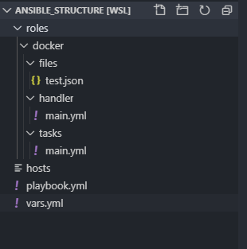

basic ansible
Première prise en main
Friday, Jan, 2020 By Derios.

Les basiques pour monter un projet sous ansible, avec un ensemble de bonne pratique.
J’aborderais la version non-graphique.
Description
Ansible est un des outils d’automation phare, simple de prise en main et puissant. Il existe sous plusieurs formes :
- la version console documentation officielle
- La version graphique entreprise site officiel
- La version graphique en community edition github officiel uniquement sur docker
La version graphique est principalement apporte une interface de monitoring de vos jobs qui peuvent être ‘schedule’, et surtout des profils avec des droits attribuer à ses profils.
Ce qui peut répondre à des besoins de sécurités, de plus, il y a le support de RedHat..
L’intégration par exemple aux pipelines se fera par le biais d’API, elle n’apporte pas par-contre, à l’heure ou j'écris cette article, de possibilités d’automatisation plus poussées.
Pour avoir utilisé les deux, la vitesse de développement des projets est en faveur de la version ‘classique’.
Utilisation
Premier pas
installation
yum install ansible # centos/redhat
apt install ansible # debian's distri
dnf install ansible # fedora
Création de notre premier playbook
note: l’hôte est une machine linux.
A mettre dans le mm répertoire host, playbook.yml
On commence par créer le fichier host, contenant un ou plusieurs hôtes qui contiendra
On peut mettre également des vars à ce niveau comme ansible_user
[nomdugroupe]
hostname1|ip ansible_user=test
hostname2|ip
Nous allons afficher un hello world sur l’hôte, capturer la stdout afin de l’afficher par ansible
- hosts: nomdugroupe
tasks:
- name: echo world
shell: echo "world"
register: stdout
- name: Display stdout
debug:
msg: {{ stdout }}
Notre premier projet
C’est ici que les choses deviennent vraiment intéressante
Structure d’un projet

(work in progress)